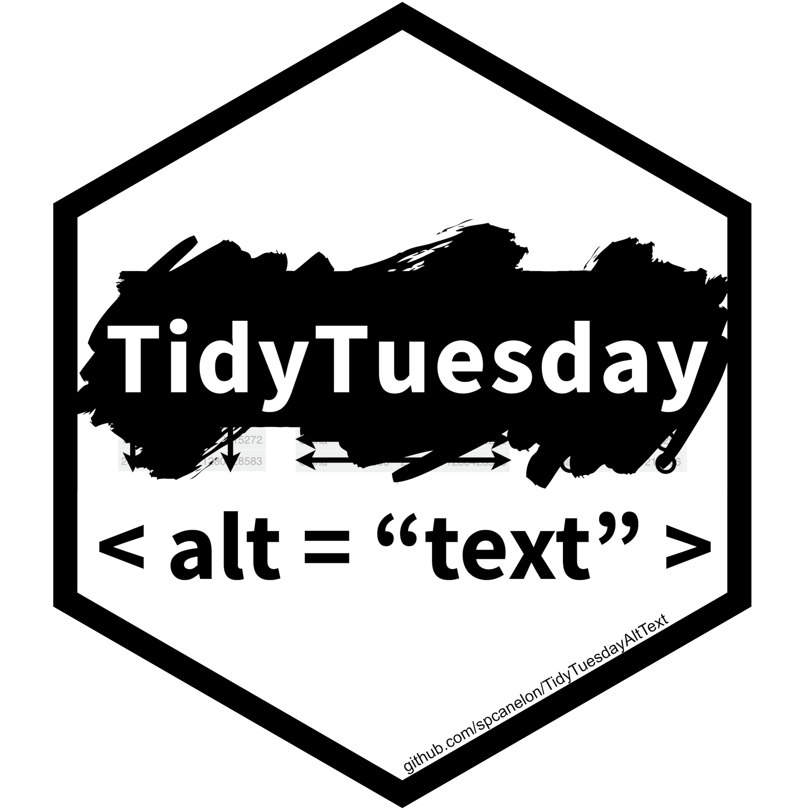

TidyTuesdayAltText
An R package with the goal of providing insight into the alternative (alt) text accompanying the data visualizations shared on Twitter as part of the TidyTuesday social project.
About the data 
The original data were collected and made available by Tom Mock (@thomas_mock) using {rtweet}. These data are available in the TidyTuesday repository.
These tweets were processed and scraped for alternative text by Silvia Canelón (@spcanelon)
- Data were filtered to remove tweets without attached media (e.g. images)
- Data were supplemented with reply tweets collected using {rtweet}. This was done to identify whether the original tweet or a reply tweet contained an external link (e.g. data source, repository with source code)
- Alternative (alt) text was scraped from tweet images using {RSelenium}. The first image attached to each tweet was considered the primary image and only the primary image from each tweet was scraped for alternative text. The following attributes were used to build the scraper:
- CSS selector:
.css-1dbjc4n.r-1p0dtai.r-1mlwlqe.r-1d2f490.r-11wrixw - Element attribute:
aria-label

This data package does not include data that could directly identify the tweet author in order to respect any author’s decision to delete a tweet or make their account private after the data was originally collected.1
To obtain the tweet text, author screen name, and many other tweet attributes, you can “rehydrate” the TweetIds (or “status” ids)2) using the {rtweet} package.3
TidyTuesday databases on Notion
I use the data available in the TidyTuesday repository to populate some searchable TidyTuesday databases at tiny.cc/notion-dataviz with data visualizations tagged by the dataset of the week, hashtags, mentions, etc.

{kind=link}